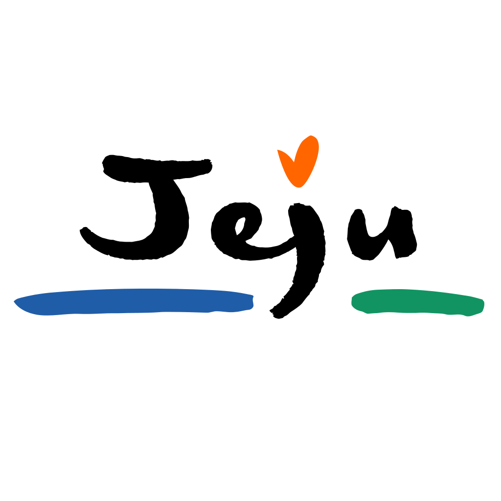

Hypertext Markup Language (HTML) is the standard markup language for create web pages and web applications.

More information for Jeju:
Click here
Jeju is the most awsome place of Korea. I am going to jeju soon.
Cuz my hometown is Jeju ,so i go to Jeju prequently.
Im always enjoy Juje's atmospheare.